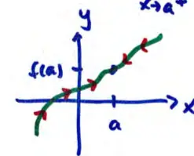
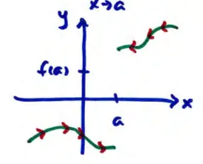
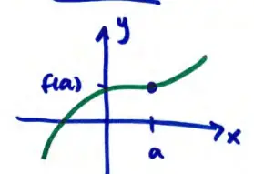
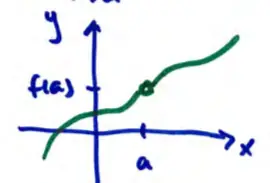

15.2 Limits and Continuity
Recall if \(\lim_{x \to a} f(x) = L\) then we can make \(f(x)\) as close to \(L\) as we want by making \(x\) sufficiently close to \(a\).
If \(\lim_{x \to a} f(x) = L\) then it doesn't matter how we approach \(a\)
\[\lim_{x \to a^+} f(x) = \lim_{x \to a^-} f(x) = \lim_{x \to a} f(x) = L\]

limit exists

limit DNE
If \(f(x)\) is continuous at \(x = a\), then \(\lim_{x \to a} f(x) = f(a)\)


limit exists
but \(f(a)\) not defined
NOT continuous